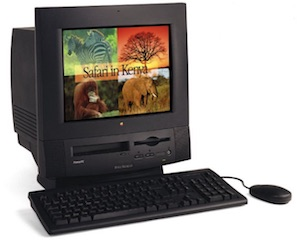
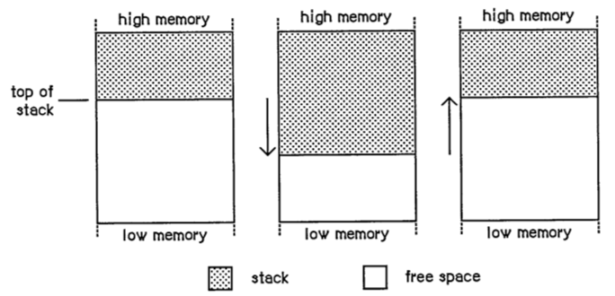
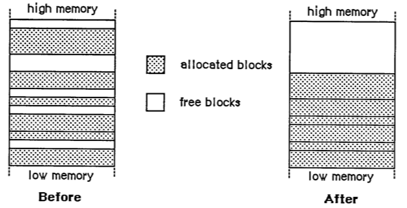

Compiling a Mac OS 8 application on macOS Sierra
In 1999, armed with a brand new copy of Metrowerks Codewarrior and a PowerMac running Mac OS 8.5.1, I wrote a basic implementation of Minesweeper to test out the Powerplant application development environment. It’s the oldest project of mine that I’ve kept, so I wanted to see if I could get it running again for the first time in 17 years.
There’s no Swift or Objective-C code in this article but there are disk-eating koalas, deliberately misspelled cities, Zernike polynomials, Cocoa software (but not the Cocoa you’re thinking of), resource forks, master pointer blocks and in the end, I finally earn the admiration of my family.
The 1990s
The Internet came to Australia in the late 1980s and reached my home town in 1989 when AARNET connected the University of Melbourne with the Australian National University.
Not that I noticed at the time. I was out of the country for a few years working as a famous movie star (or something else; I don’t know it was a long time ago). However, I did first read about the Internet in 1989 in Clifford Stoll’s book “The Cuckoo’s Egg”. Around 3 years later I was finally shown by a friend’s older brother how I too could gain illicit access to Internet computers: you just walked into one of the libraries on university campus and sat down at any computer; no login required.
The library computers all had Fetch (a disk-eating koala and FTP client that delivered low quality shareware mirrored from the University of Michigan in “.sit.hqx” format), NewsWatcher (a Usenet client for flame wars and 23 uuencoded parts out of 45), MacGopher (a rodent in the family Geomyidae that delivered menus containing menus containing menus containing – actually, I never made it that far) and an oddball new program called Mosaic (a program written at the Andreessen Center for Supercomputing Champagne that specialized in drawing 75% gray backgrounds behind “under construction” logos).
Thusly blessed by early access to the World Wide Web, I had no choice but to start a career as a part time web developer while still in high school; first plain HTML, then Perl, then PHP/FI (two steps forward, one step back). I never really enjoyed web development but it helped pay my way through university with a little left over to buy a PowerMac 5500/250. Apple of the 1990s being what it was, there were countless different computers that shared the name “PowerMac 5500” but the version I bought was charcoal black and had a built-in TV tuner, making it even cooler than the Quadra 840av that I had lusted after a couple years earlier (although it shared a similarly ridiculous GeoPort modem).

Doomed development environments
Initially, I was still programming the PowerMac 5500 using the old copy of Think C 5 that I’d been using since 1991.
Think C was where I learned C and C++ (or whatever passed for C++ in 1991) but I don’t know where any of that code went. Away? Eaten by a grue? It’s gone.
By 1998, Think C 5 was woefully outdated (Symantec and Norton Utilities had merged and been ruined by going full anti-virus) and I needed something else. Apple’s development offering at the time was MPW, the “Macintosh Programmer’s Workshop”. According to some, it was the “primary environment for developing serious Mac programs” but I never really used it. It wasn’t free at the time and it was barely more than a glorified “make” script and command prompt. After using Think C for many years, the idea of programming without a proper IDE seemed like a serious regression (a principle I still maintain).
I briefly dual booted BeOS on my PowerMac and used it as a C++ development environment. It came with the simple but effective “BeIDE” C++ development environment. I had not developed for either NeXTStep or Win32 at the time but in retrospect, the BeOS APIs were like a weird mashing together of NeXTStep and MFC with a few Classic Mac OS and Unix ideas. You had the main application APIs named “Application Kit” – like NeXTStep’s AppKit but with “B” prefixes instead of “NS” prefixes. The core event loop resembled Win32-like window message handling. Under it all, your application was built from a number of “.rsrc” resources – like those in Mac OS – that were linked into the executable. And the whole thing ran in a vaguely POSIX environment with access to a bash shell.
At the time, BeOS was amazing – a cold boot to desktop in 15 seconds in 1998 was unbelievable – but Apple had passed over BeOS for something called NeXT (the right decision, in retrospect, although I disagreed at the time) and the rats were already leaving the ship. An operating system can’t survive without users.
I don’t know where my BeOS code went but I assume that like all BeOS code, it didn’t survive the transition to Mac OS X.
While using BeOS, I noted the release of Metrowerks CodeWarrior 1.5 for that platform which claimed to be a more “powerful” IDE than the default BeIDE. I never tried it on BeOS but Metrowerks released an update for the Mac, “CodeWarrior Pro 2”, so I gave that a go. Codewarrior had features I’d never seen before: a graphical class browser, an up-to-date C++ compiler, excellent layout editor “Constructor”, an IDE integrated resource manager “PPEdit” with a wide set of resource editing tools, and a user interface with a sense of style and use of colors other than gray (although, obviously, still plenty of gray).
For at least 3 years between 1998 and 2001, I loved CodeWarrior. I still fondly remember the box with yellow and black construction theming, the “Blood, sweat, code” tagline and the huge leap forward it represented in development tools for the Mac. Motorola (who acquired Metrowerks) completely fumbled the Mac OS X transition (also the PowerPC G4, the Iridium network, the ROKR phone and everything else since the 1980s) and Mac programmers largely moved to Apple’s Project Builder. I still miss CodeWarrior’s IDE; there were aspects of its user-interface in 1998 than were better than any major IDE before or since.
Application frameworks
It’s a bit strange to think about a time when the libraries bundled with the operating system didn’t really include a standard application framework and apps needed to include their own. To be clear, I’m talking about libraries like AppKit/UIKit that perform basic application lifecycle stages, coordinate document creation and persistence, handle the main event loop, handle event dispatch and offer a library of reusable views and controls. In the 1990’s and earlier, these things were not a part of the operating system. Every application had to handle it all for themselves – or bundle a framework that could do it.
The first such framework on Mac platforms was MacApp – an Object Pascal framework originally developed under Larry Tesler. Of course, Larry Tesler has a long history in software, including a long stint at Xerox Parc with Alan Kay. He also worked on Stagecast Creator – the kid friendly application development environment that was originally called “Cocoa” when it was at Apple until Larry left Apple and took the development environment with him (minus the name) and Apple reused the name “Cocoa” for some other project.
My first efforts at programming for the Mac in C involved typing out an application framework named “Skeleton” from a book that I’ve long forgotten (numerous frameworks at the time used the same “Skeleton” name so it’s hard to work out, now, which book I actually read). The whole process was complicated by the fact that I had never seen C before so when I encountered compiler issues, I tended to add & and * sigils to parameters, or just arbitrarily cast my pointers, until the compiler shut up and I was left to wonder what caused the erratic and crash-prone result. This was before memory protection, so when I say “crash”, I mean I needed to reboot the whole computer – it was a painful learning process. C’s use of an asterisk in the declaration (e.g. SomeType *somePointer;) to define a pointer but asterisks elsewhere (e.g. *somePointer) to dereference that pointer remains one of the most newcomer hostile syntax decisions I’ve ever encountered in a language (I should have gone with Object Pascal – its pointer syntax even looks like a smiley ^_^).
Skeleton was enough for me to write my first few applications. One that sticks in my memory was a version of Minesweeper. It was 5000 lines, all in a single “main.c” file and contained no resources or assets since I didn’t really understand those things (I drew the artwork pixel by pixel in C). The code is long gone but I assume it was flawless.
I had clearly learned everything there was to know about C so I moved onto C++. The Think C environment I was using included the Think Class Libraries (TCL). I spent more time learning C++ than learning about TCL itself. While I remember reading the TCL manuals, the chapters that remain in my mind were those that talked about “Object Oriented Programming” as though it solved all problems but then immediately segued into the infamous “diamond inheritance” problem and discussions about cars that are also planes (some things never change).
Armed with C++ and TCL, I half-finished numerous other programs through the 1990s, each more flawless than the last. But as 7 years of System 7 drew to a close in 1998, it was time to start fresh. This time with PowerPlant, the application framework bundled with CodeWarrior.
I haven’t kept all my CodeWarrior/PowerPlant projects but I have kept some. Maybe one day I’ll try to get my engineering final year project working again; the enticingly named “On Image Analysis Using Zernike Moments”. It was the best rotionally invariant orthogonal polynomial image recognition Mac app that year but the time might not be right to bring it back, just yet.
Instead, I want to look at the first program I wrote with PowerPlant: a “re-imagining” of my earlier flawless masterpiece; a Minesweeper implementation. Here’s hoping that in the 7 years since my earlier Minesweeper implementation, I’d learned basic pointer syntax.
PowerPlant
I need to get PowerPlant building before I can try to build a PowerPlant-based app.
Fortunately, PowerPlant ended up open source. Freescale (the Motorola spinoff that took CodeWarrior with it) open sourced PowerPlant under a BSD-style license in 2006. The PowerPlant Frameworks project is largely abandoned but it exists and worked through the first few Mac OS X versions. But not through all Mac OS X versions. PowerPlant requires the Mac OS X 10.6 SDK or earlier to build – it won’t build against the 10.7 SDK and certainly won’t against the 10.12 SDK.
The last versions of Xcode to include the 10.6 SDK were the Xcode 4.3 series for Mac OS X 10.7 Lion. You can’t run any of these on Sierra but you can open the bundle and copy the “Xcode.app/Contents/Developer/Platforms/MacOSX.platform/Developer/SDKs/MacOSX10.6.sdk” folder and place it at the same location in your Xcode 8’s bundle.
That’s not enough to get the 10.6 SDK to work. You also need to edit the MinimumSDKVersion in the “Xcode.app/Contents/Developer/Platforms/MacOSX.platform/Info.plist” file in your Xcode bundle.
Okay, Xcode is set up. Now to create a project file. I have no idea which files PowerPlant needs and which are optional extras so I threw everything into a single Xcode target, set the build to a 32-bit Intel build, 10.6 SDK, added “$(SDKROOT)/Developer/Headers/FlatCarbon” to the header search paths, set “Always search user paths”, “Compile sources as C++”, arbitrarily chose one of the prefix headers, set the C++ dialect to C++98 and the standard library to libstdc++ and hit build to see what would happen.
Oh hi there, OpenTransport! I remember you! How are things going? Oh, how sad; you stopped existing after Mac OS X 10.3? Fine, everything networking gets removed from the build.
Apparently, I’m trying to build against an old library from the 1990s I don’t have named “MoreFiles”. Even though versions of it still appear to exist on GitHub, it’s optional so I’ll disable it.
The debugging functions are causing problems so they go too.
Dozens of switch statements appear to have variables defined within case labels which is bothering clang. I’ll need to wrap them all in their own scopes.
Gestalt is driving me crazy by telling me that it doesn’t return the correct OS version past Mac OS 10.9 so I strip it out and hard-code its result. That’ll fool it.
A dozen little changes later and everything appears to work.
A Carbon version of Mines
The Mines application itself is around 1800 lines of code split across just 4 classes. It’s at the “small”, if not “tiny” end of the program size scale.
However, unlike PowerPlant – which had been updated for Mac OS X – I had not tried to run or compile the Mines application since Mac OS 8.5.1 back in 1999. I’ve never ported any apps from classic Mac OS to Mac OS X so I don’t know how smooth it will be.
It turns out that the only more-than-one-line code change I needed to make was to replace ::StandardGetFile (the standard open file dialog from classic Mac OS). This function is not a part of Carbon and needs to be replaced by ::NavGetFile. I dutifully made a 15 line change here only to subsequently realize that this code isn’t used at all (the application doesn’t save files so opening files does nothing).
There are a few other minor compatibility changes I made. ::GetDateTime to CFAbsoluteTimeGetCurrent, .rgnBBox to ::GetRegionBounds but on the whole everything appears to compile without serious drama.
Resource forks
Of course, upon running, the program immediately aborted trying to find the required resources.
Classic Mac OS resources weren’t anything particularly strange: they were really just a way of serializing a number of binary blobs into a single file. Each resource was uniquely identified by a type code and an index.
None of this represents a problem. What does represent a problem is that these resources were stored in a separate resource “fork” of the file. In some ways, that made sense; these blobs were often metadata for the data stored in the data fork. While it’s a nice idea to have rich, structured metadata, storing metadata outside the data fork is problematic in a world where files are moved between operating systems and file systems that interoperate only via a single data fork; metadata either gets lost or it ends up as a series of annoying hidden files.
In short, rich metadata should be purgeable (like Spotlight metadata – it will be regenerated contextually or from the main data the next time Spotlight sees the file). Non-purgeable metadata should be in the main data fork.
Accordingly, resource forks have always been “deprecated” in Mac OS X. It can read them but only with some effort. Rather than needing that effort, it’s far better to move the old resource forks from “Mines.rsrc” (standard resources) and “Mines.ppob” (PowerPlant-specific resources) into the data fork of a single file. If this new data fork resource file is named “Mines.rsrc” (same basename as the executable) and placed in the application bundle’s “Resources” folder, its data fork will be automatically read when we call ::GetResource.
The shortest way to do this is to run “derez” on the two resource forks (e.g. derez Mines.rsrc > Mines.r and derez Mines.ppob > Mines2.r), concatenate the two files and use “rez” to build them back into a single data fork (rez Mines.r -useDF -o Mines.rsrc). A small note on concatenation: the files may be produced with classic Mac CR line endings. If the file also contains UNIX LF line endings then “rez” will silently ignore everything after that point (I spent 20 minutes wondering why none of the resources from the .ppob file were being found after a UNIX LF crept into a class Mac CR line endings file).
It’s alive!
With the resources fixed, the application runs.
Click on “New Game”, left-click on tiles to reveal, shift-click to mark possible mines (I had a single-button mouse at the time) and continue clearing until every non-mine is revealed. Use the “Game Options” in the “Game” menu to change the number of mines, the size of the field, whether there’s a time-limit and whether the game is “auto started”.
There remain plenty of quirks that I’ll leave “as-is”. The “About Mines” item in the “Mines” menu works but all other items in this menu do nothing (including the two “Quit Mines” entries, probably created by PowerPlant itself). To quit the app, use the “Quit” at the bottom of the “File” menu.
A quick code analysis
It’s not the worst code you’re likely to see. It’s tidy and coherent, even if it demonstrates apparent ignorance of any larger scale design patterns.
The most obvious problem is that each square in the minefield is represented as a simple short – with the adjacent mines count, cleared status and flagged status packed into the short using bitmasks. On a technical level, this works fine except that packing and unpacking data from the short is work left to the CMinesWindow, requiring methodical and menial work at every location where the minefield is accessed.
Clearly, it would be better if Tile were a C++ class with methods that return isFlag or numAdjacentMines and the packing or unpacking of data were abstracted away as internal technical details (perhaps as proper bitfields). This would make CMinesWindow code easier to read and would likely have significant lines-of-code savings.
// Add one to the proximity count of each surrounding square
if( (randNum%mFieldWidth)!=0 )
{
if( (randNum/mFieldWidth)!=0 )
if( (mMineField[randNum-mFieldWidth-1]&0x00FF) < kEightMines )
mMineField[randNum-mFieldWidth-1]++;
if( (mMineField[randNum-1]&0x00FF) < kEightMines )
mMineField[randNum-1]++;
if( (randNum/mFieldWidth)!= mFieldHeight-1 )
if( (mMineField[randNum+mFieldWidth-1]&0x00FF) < kEightMines )
mMineField[randNum+mFieldWidth-1]++;
}Tile and MineField interfaces.That leads into idea that the mine field itself should be a single MineField data type that knows how to determine adjacent Tiles, knows its own bounds, knows how to populate itself and knows how to propagate revealed zero tiles.
Then we need to consider the fact that all the state of the game (time remaining, mines remaining and the mine field) should be part of a Game data type that knows how to start the game based on a set of initial difficulty settings and can serialize the user instruction stream (reveal this tile, protect that tile).
The Game should be easy to serialize (save and restore) and pause – neither of which are possible in the existing game.
Finally, this all leads into the question of whether there is any Model-View-Controller separation in this code. There are not clearly separate “Model”, “View” and “Controller” classes but it is still possible to identify the data members and methods which correspond to each – even though they are all part of the CMinesWindow interface. All of the instance variables that CMinesWindow itself defines are really model data. Everything view-related is purely in the inherited CWindow and the CMinesView. The controller code occurs in the CWindow, LPeriodical and LListener method overrides which propagate changes from the view and outside environment to the model.
//#############################
// The constructor
//#############################
CMinesWindow::CMinesWindow(LStream* inStream) :
LWindow(inStream)
{
// Initialise some variables
mFieldHeight = 12;
mFieldWidth = 20;
mNumCoveredSquares = mFieldHeight * mFieldWidth;
mNumMines = 20;
mGameLength = 200;
mInGame = false;
mAutoStart = false;
mUntimed = false;
// Place a decorative minefield in the window to start with
mMineField = (short *)::NewPtr( sizeof(short)*20*12 );
ThrowIfMemFail_(mMineField);
//Clear the minefield
short i=0;
while( i < mFieldWidth*mFieldHeight )
{
mMineField[i] = kZeroMines;
i++;
}
}Given all of these perfectly valid criticisms, it’s surprising how tidy and organized the code all is. I guess abstractions really just don’t matter much when the code is this small.
Handles
In general, looking at Mac OS 8 era code isn’t as strange as I expected. Maybe it’s because I’m still accustomed to reading C++ and C in my daily life but this isn’t so different from some of the code I still actively maintain today. C functions taking multiple carefully allocated and configured struct parameters and returning error codes was ugly then but it’s still ugly now. You can find plenty of modern CoreFoundation functions that work the same way.
What really jumps out at me as “code from another world” are handles.
For those of you that don’t remember: memory layout in pre-OS X era Mac OS was “fixed”. Your application was given a specific memory size at launch and the stack was at the top, the heap was at the bottom and the two raced towards each other – frequently colliding in out-of-memory or stack overflow situations. You could “Get Info” on the application and give it more memory on next launch but once launched, the application couldn’t easily get more memory.

One of the biggest problem in this arrangement was memory fragmentation – allocating and deallocating heap memory in a pattern that leaves unusable “holes” in the heap. Memory fragmentation still exists (it is partially mediated by memory paging and better allocators) but we can usually ignore it because 30% excess memory usage isn’t a big issue when you have 16 GB of RAM. In an era when the computer might have less than 1MB of RAM, memory fragmentation was a serious problem.
To address this, Mac OS used “handles”. These were different to Windows handles (which are memory resources owned by the operating system on your behalf). Instead, Mac OS handles were pointers to pointers. Dereference a handle once and you’d get the “master pointer” which lived in a special “master pointer block” (ideally at the bottom of the heap). Dereference the “master pointer” and you’d finally get your actual block. The advantage with this approach is that while the “master pointer block” was a fixed location, the actual block was “relocatable” – it could be moved by the memory manager to resolve heap fragmentation.
Each time you wanted to access the handle’s data, you had to dereference both levels so you could find the (possibly) moved location. If you needed to use functions that could move memory, you needed to be careful to call HLock to hold the handle in place otherwise every pointer to the handle’s contents would be invalid. Needless to say: this caused memory corruption on a regular basis when failing to consider heap compaction around your pointers. Good times.

You also needed to guess how many handles would be needed by the program and allocate the correct number of master pointers blocks at program startup. Master pointer blocks could be added at any time but since a master pointer block was a “fixed” location allocation, it would fragment memory if it appeared in the middle of the heap.
Of course, none of this has ever applied to Mac OS X. All the HLock, MoveHHi, MoreMasterPointers and other related Handle functions have always been no-ops on Mac OS X and Handles are now non-relocatable (like normal pointer allocations), relying on paging and better heap allocators to mediate fragmentation.
The entire concept of relocatable memory blocks and trying to plan for peak memory usage before the program is started seems so surreal now.
Independent review
So I got Mines running and it’s sitting on my computer screen. Mission accomplished, I go to cook dinner.
When I return, one of my children is sitting at the computer playing the game. Apparently my wife had given instructions on how to play and my child continued playing another half dozen games after my wife had left to help me with the dinner.
I’m not sure any of my children have ever so much as looked at one of the computer programs I’d written before, much less played with it for 20 minutes.
What was the opinion?
“Good.”
I’ll take it.
Conclusion
You can download Mines from my github account. This code is under two different open source licenses due to the inclusion of PowerPlant. Remember that you still need to obtain a copy of the Mac OS X 10.6 SDK and modify the Mac OS X platform Info.plist file or you’ll get errors about a missing SDK when you try to build. Consult the Readme file for details.
I didn’t really expect to get Mines running but in the end it was surprisingly simple.
I mean, it took nearly 4 hours to get PowerPlant building. I’ve omitted some of the wrong turns involved for brevity. I also spent a couple hours trying to get the PowerPlant “Constructor” application to read my old “PPob” resources which I didn’t cover. This eventually worked (after replacing ::FSpOpenResFile with ::FSOpenResourceFile and forcing loading of the 'CTYP' resource files) but was riddled with issues parsing layout and colors so I wouldn’t want to actually maintain a user-interface this way.
Updating my own Mines application code for PowerPlant and Mac OS changes required less than 20 minutes (ignoring time wasted due to line encoding issues in the “.r” Rez file).
The game itself is simple and full of quirks, design issues and gameplay problems (try setting the board size to largest and the mines to “Some” and the game basically solves itself). Obviously, I didn’t do this for the quality of the game; I just wanted to see if I could.
A key-value observing wrapper
Using 'swift package fetch' in an Xcode project